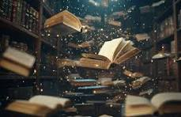

Why Books Are Better Than Movies
First, books give us imagination. When we read, we don’t just watch a scene unfold—we create it in our minds. The characters look the way we picture them, the setting feels real in our own unique way. Movies show you one version, but books let you build your own world.
Second, books offer detail. A movie has about two hours to tell a story, so a lot gets cut out—backgrounds, emotions, even entire characters. In books, we get the full experience: the character’s thoughts, feelings, and struggles. You don’t just see what happens, you understand why it happens.
Third, books are personal. Everyone reads at their own pace. You can pause, reread, and reflect. Movies rush you forward whether you’re ready or not. With books, the story belongs to you—it’s an intimate conversation between the author and the reader.
Lastly, books last longer. A movie might end and be forgotten in two hours, but a good book stays with you for weeks, even years. The lessons and emotions linger because you’ve invested time imagining and understanding
So while movies entertain, books inspire. Books feed our imagination, deepen our understanding, and leave a lasting mark on our hearts. That’s why, in the battle of stories, books will always win.
